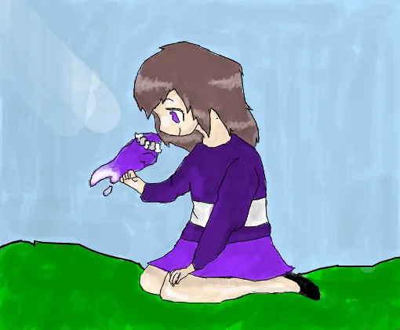

13th November, 1997
Jamie woke with a start and looked around wildly. He was relieved that there was no one there to harm him. He glanced at his wristwatch. It was almost 4. He had been sleeping only two hours and there will still two to go. He pulled his covers more tightly over his body and willed his mind to shut down and take him to oblivion. But as usual, it didn’t do any good.
He grasped one of the pillows and hugged to whilst imagining that it was a person, a person who was there for him and understood what he felt like. Gradually, the lines on his forehead relaxed and the movements of his throat ceased as he drifted off to sleep.
Jamie walked on the familiar path to school. It was a cloudy day with a very light drizzle. It was just the kind of weather he preferred. He felt the soothing gush of the breeze on his face, and the wind breaking through his hair helped him calm himself.
He was trudging along alone but it was nothing to how alone he actually felt. It was as if there was another person inside him frugally trying to break open the shell outside and come into persistence. He also felt that some force was acting on him at the same time and compress him till he stopped existing. Something was eating portions out of him and trying to finish him off. In others’ eyes, he kept on his mask of pretentious joy, but in reality he was suffering excruciating pain.
A practical part of his brain told him to forget about all that and relax. But, it all came gushing back to him without warning. Jamie tried to suppress his thoughts as much as possible but he was unable to do it. Thus, fighting against himself, he walked on.
Jamie sat at his usual place which was at the very back of the room. He sat with his head hung low because he was afraid that the teacher might call on him to answer something. It wasn’t that he was ignorant, but going to the podium in front of the entire class was mortal peril to him.
Jamie was sitting alone on the two seater bench. Part of him wanted to be alone and some other part wanted someone nebulous to come and sit beside him, joke with him and distract his mind from the overwhelming grief. It didn’t feel very good to be set apart from everyone but deep inside, it gave him intense pleasure. He tapped his desk with the nervous energy he almost always possessed, which never ceased but did cause fatigue.
Jamie crouched with his face shrouded by his hands on the hostel steps. The rest of the hostel was a pandemonium caused by the other boys playing around and chatting gaily with each other. But, Jamie didn’t find any purpose in doing all that. He was too sad to celebrate, and was immersed in deep thought about why he did exist at all and what was going to change if that night was the one of his demise. He knew he was unhappy, but never could he find the reason for his prevailing grief.
One of the genial guys, Jesse came running up the stairs. Jesse was the most extrovert guy at school. He paused and asked in his usual perfectly friendly tone, “What’s up, Jamie?”.Jamie just held up his right thumb without even looking up to indicate that everything is perfectly alright. He winced when Jesse gently patted his shoulder and listened to the sound of his retreading footsteps as he scuttled away.
He looked up at the sky. There was no moon. He liked the darkness and serenity of the night sky. The stars were engaged in a desperate attempt to crusade the darkness, but foundered as they were submerged in the eternal darkness. He pictured his mind to be shrouded by the same sphere of darkness. Tiny rays of hope sparkled faintly from time to time, but he knew that they were fighting a losing battle against his thoughts. He finally grew tired to sitting there and went back to his room evading glances of all people on the way.
17th November, 1997
Jamie tried to focus his mind on the chapter he had been trying to read for nearly half an hour but hadn’t got past a few words. Now his stomach felt empty and so did his heart. But, the latter didn’t rumble like the former. His brain was like it was dipped in a tub of ice-cold water which had frozen his thoughts at one place. His head was full of voices which reflected at all parts of his miserable brain. It was like his mind was clashing against itself producing scenes of great violence and obliterating his thoughts and inhibitions. The posterior of his head was filled with scattered emotions leaving no room for happiness and tranquillity.
His eyes moistened and the tears struggled to stream down but to no avail. It had been years since he had had the luxury of breaking into tears. Half of him compelled him to stay strong, while the other part wanted to weep out all his grief. He glanced at the timepiece on his table. It was high time to sleep. So thinking, he walked towards his bed without any hopes and expectations pertaining to the next day.
Jamie was jerked awake by a loud shout and noises of quick footsteps. He scrambled out of bed into his slippers and opened the door just in time to see people thundering up the stairs. He called out to a boy who he thought was called Patrick, “Hey, What’s all the fuss about?”
Patrick looked extremely grave as he whispered, “Jeffrey upstairs just got a call from home about his mother. She’s passed on.”
“Why? What was wrong with her?”, Jamie blurted out and immediately regretted it.
“She’s been battling cervical cancer for many years.”, Patrick replied looking a little annoyed and hurried up the stairs.
Jamie felt frozen in time for a moment and felt weak at his knees. He had always thought of Jeffrey as a cocky guy who was always surrounded by his gang and strutted around college as if he owned the place. He had never imagined that he was concealing so enormous a sorrow within himself. He suddenly had an urge to go upstairs.
Jeffrey was sitting pillion on his bed and he looked almost unrecognisable from the confident, handsome boy who was there to deliver his opinion everywhere. He was pale and seemed to be looking at something beyond the horizon. He wasn’t crying, but one could see the sorrow in his eyes that were to week to form tears. The room was full of boys standing uncomfortably and mumbling comforting words.
Jamie was driven by some impulse to sit beside Jeffrey and take his hand in his own. He said nothing, but just allowed the him to lean on him and sat there for unknown units of time.
18th November, 1997
Jamie walked with his hands deep inside his jeans pockets. He could see Jeffrey in front of him looking more confident and bolder than he did last night. He was walking with his friends in a huddle. Jamie couldn’t exactly hear what he was saying but from his gestures, he could infer that he was trying extremely hard to stay strong and keep both feet on the ground.
Jamie had almost forgotten his own misery in the light of Jeffrey’s grief. He still felt wretched and unenthusiastic as he walked alone as usual. The college campus was situated near the country and it was natural to see some village
folks in the grasslands. As he watched, something caught his eye. It was two little boys wearing tattered clothes leaping in the air like a pair of apes.
Jamie paused to watch them as another similar looking boy approached them. He couldn’t resist the urge to eavesdrop into their conversation. “Yeah! Today I am the luckiest guy on the planet. I found a dollar along with the garbage. Today, all of us can have our fills.”
Jamie was moved on hearing this and he almost went and talked to them, but suddenly changed his mind and retreated because he didn’ t want to intrude into their rhapsody.
Jamie sat with his face resting in his hands. It was the Math lesson. He liked it okay and was even decently good at it. He was taking in most of what was being taught, but a major part of his brain was engaged in pondering about the events of last night and the morning. He was still alone and sad but the sadness didn’t inflict him like it usually did but just felt like a nagging presence inside him.
“Who can solve this on the board?”, asked the Professor with his usual smile signalling that the problem definitely was not a piece of cake. Jamie took one look at the board and knew he could solve it without breaking into a sweat, but he didn’t raise his hand.
He liked solving problems but he didn’t dare go up to the board to do so. He became extremely self-conscious when he had to walk in front of seated audience. He felt a tug at the back of his neck and thought that people would find his stride weird.
Then from the opposite corner of the class, a girl stood up and took hold of her crutches. Stacey had mild celebral palsy and didn’t have proper control over her feet. She trudged forward supported by the crutches, hobbled onto the podium and finally reached the blackboard whimpering. She leaned her body on the board and wrote out the solution to the problem.
She did everything perfectly, but swayed in the end to make a little error. Jamie noticed the mistake at once but didn’t answer again when the teacher asked for improvement in Stacey’s solution. Jamie felt an inexplicable lump in his throat and didn’t know why he kept glancing over at Stacey during the rest of the lesson.
Jamie was lying in supine position on the terrace of the hostel beholding the sky. He admired the inexplicable massiveness he saw when he looked upwards. You could look wherever you wanted but couldn’t see where it began and where it ended. Jamie was deep in thought about the events of the day and felt miserable. But, he even felt something other than grief. It was shame. He didn’t know why but he felt ashamed when he thought of Stacey, Jeffrey and the little boys.
But, he still had the sadness to keep him company. There was a little scurrying noise behind him. Turning around impulsively, he discovered Jesse standing there with his usual gentleman smile. To Jamie’s displeasure, he came over and sat beside him. Jesse tried to initiate conversation about the weather, class and other day to day topics. Jamie only shrewdly replied to the questions expecting Jesse to get exasperated and then leave.
Instead, he came close to him and asked, “Why are you sad? What is it that is disturbing you?”
This was a question nobody had ever asked Jamie. People had always labelled him introvert and withdrawn, but no one had ever observed that he was sad besides himself. Even his own parents had never done that. But, this bloke was the first person to do so and his straightforward question unhinged Jamie.
Jamie answered without thinking, “I am sad because I have nothing. I have no talent, no purpose, no dreams, no friends, nobody gives a damn about me. I have nobody. I am nobody.”
He figured that Jesse would definitely think he was mad and go away, but he said with no change in expression, “What is it that you do not have? You have everything. It is just that you are turning a blind eye towards everything you have.”
Jamie almost lost his cool. He hated Jesse for being so calm. “How can you say that? You hardly know me and you don’t know one bit about my problems. You are everybody’s golden boy. Have you ever even felt any sort of grief in your entire life?” Jamie was panting by the time he was finished. Without a look at Jesse’s face, he stormed away.
While jumping down the stairs, he bumped into the hostel warden. “Oh Jamie, please watch where you’re going. And if you see Jesse Greene, tell him that there is an urgent call from the orphanage.” With that he walked away.
Jamie couldn’t understand why Jesse was being called by an orphanage. First, he decided to tell him nothing and walk away. But, he was held back by both guilt at not informing him and the curiosity to find out about the orphanage that he decided to just tell him that for his honour and leave it to that.
So, he just walked to the roof and rambled off, “You’ve a call from some orphanage.”
“Ah, well”
Jesse was still smiling. “They do call from time to time”
Jamie couldn’t hold his curiosity any longer, “Why would an orphanage do that?”
“I grew up at Sir Churchill’s orphanage. I came here with a scholarship.”
Jamie felt a cold impulse on his spine and the hair at the back of this neck started to stand up.
“So, what about your parents?”
“Never knew ‘em. Used to hope someone would turn up, but who cares now”, sighed Jesse. “I think I should really take that call. You take care.”
With that ran down the stairs one of the strongest people Jamie had ever met. Jamie felt like a cowered kitten, too scared to come out of his shell of comfort and face the world. All the sorrow was drained out of him and was replaced by shame. He detested himself for being so selfish to think that he had nothing when the world was full of people with real problems who were still trying their best to hold on.
He plodded back to his room, shoulders sagged and reproaching his mind for being so thoughtless, rebuking his heart for being so cold and reprimanding his conscience for being so vile so as to do what he had done.That night, he slept soundly without waking up even once. But still, he had a dream about his mother whom he never called and never talked properly to. She was cooking in the kitchen at his home as he could see the familiar notes on the refrigerator, a few framed photographs of him when he was a kid on the walls and their garden through the window. He had never really appreciated how beautiful all this really was.
As he stood there gazing around, his mother turned around and walked to him, smiling. She put her arms around him and just said, “How are you, Jamie?”
18th November, 1997
As he walked to school, he was mesmerised by the beauty of the world around himself. Ahead of him walked a few boys talking and laughing occasionally. Jogging up to them, he called out, “Hi!”. They looked a little taken aback but then greeted him back and walked with him. Jeffrey, who was among them stepped towards him with a smile. His eyes told Jamie that he was grateful. He put his one arm around his shoulder and asked, “How are you, Jamie?”
He entered the classroom through the front door for the first time ever and walked up to the teacher to wish him good morning. He smiled broadly at him and asked, “How are you, Jamie?”
“I am good, Sir.”, he replied.
He was about to head towards the last bench by instinct, but pulled himself back when he noticed an empty seat in the second row. Only when he was seated did he know that he was sitting beside Stacey who looked slightly uncomfortable and maybe a little scared. Jamie could understand as he would have felt the same thing if he were sitting beside himself. So, he put on a broad smile and extending his hand said, “Hey Stacey, You look pretty nice today.”
She looked stunned but her face gradually calmed down to a smile. She took his extended arm and shaking it said, “How are you, Jamie?”
The Math lesson that followed was the best he had had in his entire life. He responded well in the class and found every word the teacher uttered to be extremely interesting. Even discussing the problems with Stacey gave him intense pleasure.
When the lesson was over, he got up from his seat and looking around saw Jesse sitting alone at the last seat. “So, I’ll see you around.”, he said to Stacey and she nodded smiling. He went to the back of the class greeting other people
on the way and finally sat beside Jesse.
He looked him straight in the eye and said, “I am sorry for everything I said. It was all my fault and I am very thankful to you for your advice.” Jesse looked him up and down, totally poker faced and finally asked, “How are you, Jamie?”
Trina, who is struggling to complete her note on photosynthesis, beckons me from inside our college classroom; the biology lecture has concluded, and the room is empty.
“What’s the problem?” I walk into the room from the corridor and sit next to her.
“Just received an SMS that my mom has to go out of town in a couple of hours for an urgent meeting of her NGO and not expected till tomorrow afternoon.”
“So, what’s new? ”
“That means I will be alone in my Bungalow tonight.” She involuntarily shivers. “ I feel so scared.”
I then remember that her father has gone to Chennai last week and will be back next month.
“Shouldn’t your mom have thought about this?” I demand, a bit irritated.
Her mother does not seem to understand the security concerns of that Bungalow which is on the outskirt of the city. The nearest neighbour is about one and a half kilometers away towards the northeast direction, and the rest of the expanse is a green area stretching about five kilometers.
What worries me is the recent spate of housebreakings near that neighbourhood which makes the Bungalow very vulnerable, especially for Trina if she is to stay alone there. The only saving aspect is that a security guard is stationed round the clock near the entry gate of the Bungalow, but is his presence enough? I don’t think so, and I cannot be callous about the wellbeing of my loved one.
Without any reply Trina sits there in deep contemplation; obviously, she wants to find a way out when I put my hand on hers and say gently, “Tonight I can be with you if you don’t mind. We can jointly complete this note.”
The sense of relief on her face makes my day. She smiles and says, “That will be great Soham, many thanks. I will wait for you around 7.30 p.m. at my Bungalow; we will have dinner together and complete our notes; we will have a wonderful time.”
As I park my new bike in the portico of Trina’s Bungalow, at around 7.15 p.m. that evening, I feel that rain is in the atmosphere. Darkness has set in; clouds have rolled out throughout the horizon virtually obliterating stars and the moon; lightning, accompanied by deep rumbles of thunder, and increasing moisture-laden wind, all point out to imminent shower. Looking up, I guess that a long spell of heavy rain is possible, which can wet my bike here, and I don’t want that.
After some thought, I push my bike towards the cluster of garages, some distance away at the side of the Bungalow, taking a narrow path through the lawns; on reaching there and finding them all locked, I locate an adjoining small tin shed on a patch of bare land. It is a garden tool shed, and its door is open. On parking my bike inside, while going out, I notice that a drainpipe has come down from the roof; although partly broken, it will not let water accumulate inside, and spoil my bike.
Getting back to the portico and the main door, I ring the bell.
The torrential rain begins.
Trina opens the door herself, and on seeing me, her face breaks into a smile, and her beautiful eyes lit up. After that, she extends her hand to welcome me and leads me through the large drawing-room with chandeliers, exquisite furniture and tapestry, to a short corridor, at the end which a door opens into her bedroom.
Every time I come into the Bungalow, I marvel about the wealth and opulence of her household.
Her large bedroom, renovated recently, has a single bed, assorted furniture, and illuminated by concealed lights. As I look around, I also see a study table in the extreme right corner near French windows, green velvet curtains, a decorative lamp on the table strewn with books and notebooks, a comfortable study chair, and a bean bag seat next to it.
“So happy you have come.” Saying this, for the nth time, she occupies the chair with a request for me to sit on the bean bag seat. Picking up a book with numerous flag marks, obviously on the subject which we will jointly study now, she begins.
Meanwhile, she has filled in and switched ON the coffee maker placed on a small table; we will have dinner later, it is ready.
I lose count of time as we drink numerous cups of coffee and get fully immersed in our studies… when suddenly I hear a knock on the door. At first, Trina may not have heard the sound, but when another persistent knock comes, she glances up, murmuring, “Who can be there? Servants have all gone.”
Before she can get up, there is a noise as the door opens and a short man wearing a body fitting black suit with his face hidden behind a black mask strides in, following whom another man similarly attired and tall, comes in more cautiously, he has a pistol in his hand with a silencer which he is pointing towards us!
Within moments as this horrible scene sinks in, my mouth turns dry, and a painful palpitation starts in my chest; soon, my voice chokes, and I cannot react. Wordlessly as I look at those two men, I notice that Trina seems to be less scared and says sharply, “Who are you? What do you want? How did you enter my Bungalow?” Saying these she gets up so determinedly that it becomes abundantly evident that she is not going to take this intrusion meekly and will defend herself.
Seeing her reaction, the short man moves forward swiftly with a handkerchief, and catching hold of her hair forces her face upward and covers her nose firmly with it. She fights a bit initially and gradually becomes still.
Looking at those violent movements, I grasp that he must have applied some knock-out liquid, like chloroform to her, when something hits my head with a brute force. Instantly my thoughts turn disoriented, and lights start flashing in my eyes, followed by an unbearable pain shooting through my head. Soon all-pervasive darkness envelops me; I must have rolled down to the ground from the bean bag seat.
I don’t know how long I have been unconscious, however when I regain my sanity, albeit slowly at first, and later somewhat, I feel a throbbing headache; I also realise that I am stretched out on the ground, my throat is parched, my tongue feels like sandpaper, and my lips are dry. Thankfully, I am not trussed, though in a confined space. A ray of light is percolating through a slit in the door, and the space looks familiar.
Indeed, I am in the same small tin shed where I have parked my bike.
Glancing at radium dial of my watch I gather that the time is 11.57 p.m.; that means I have been unconscious for more than two hours.
Very soon the horrifying occurrence of the evening comes back! I shudder involuntarily at the thought. What can be the intention of those two men – those criminals? Perhaps it is a robbery; or is it something else? They have a pistol!
I am fortunately alive, but I am not sure about Trina.
The door of the tin shed has been open when I have parked my bike ; now, hoping that it is still open, I get up swaying and holding my head. The door is locked from outside; that must have been done by those criminals. I cannot open it, even with vigorous rattling, then, panicking, I shout, finding no response, shout again, louder, but to no avail. Maybe the guard has not heard me, or he too has been ambushed by those criminals.
Sweating and shaking, I feel around the wall of the tin shed, hoping that I can find some way out; there seems to be no way out of this captivity!
Along with my head, my legs, too, are hurting. I walk towards my parked bike at the right corner and try to sit on it, but I slip and collapse on the ground.
In no time, I again feel that I am drifting off to a state of half-asleep, partial unconsciousness; ultimately, I lower my head on the floor, with my body in a comatose position I drift into oblivion.
When I wake up, about half an hour later, everything seems to be the same. My thirst has intensified manifold, and my body seems to want food; all these make me feel faint.
I do not know what will happen to me; will those criminals keep me alive?
Time passes slowly.
The rain is relentless. I hear it thrumming on the metal roof and running down the broken pipe into the mud, and I moisten my cracked lips with my tongue. I wonder if they’ll bring me food and water. I wonder if they’re coming at all…
A feeling of despondency is now settling upon me; is there no help possible? But then, thinking about help, I remember my parents; they have always helped me … will do so now…I know that!
The question is: how will they know where I am?
If only I can contact them!
And so, another thought flashes in my mind, albeit a bit late.
Where is my mobile?
I immediately pat my shirt and trouser pockets and slowly hunt around on the ground where I have woken up initially; but it is not there. I try to recall desperately when I have last used it, but my mind remains blank. Usually, I keep my mobile on my person; is it possible that those criminals have taken it away after they knocked me out? Sitting huddled on the ground, I am thinking when my mind suddenly clears; now I recall that my mobile hasn’t been with me when I have gone in the Bungalow.
In fact, for some providential reason, I have kept it in the glove box of my bike.
And my bike is before me in this shed!
I scramble to my feet in such a hurry that I lose balance and fall down, get up again and as I reach it, I inadvertently topple it over. With shaking hands, I pull it up to standing position and open the glove box; mercifully, I find my mobile!
Exertion and relief make me feel exhausted.
Wasting no time, I dial my father. The phone goes on ringing; soon the call automatically terminates. He must be asleep at this time of night. I frantically try repeatedly with the same result. My mother’s mobile has been switched off.
What shall I do next?
Panting, my thirst makes me feel like puking, I take hold of myself and think for many moments. Shall I call the police? My friends? But again, I am unable to get through; I clench my hands in deep frustration!
Before long, I hear somebody is opening the door. With lightning speed, I keep away the mobile behind a pile of garden tools at the rear and slump on the ground; whoever is coming need not know that I have regained my senses.
With half-open eyelids I see that the short criminal enters the shed; he has an electric torch in one hand and a bottle of water in the other; directing the beam of light on me, he swears profusely and splashes some water on my face. I remain inert, at which point he throws more water; groaning for a few seconds, I gradually open my eyes.
Without further ado, he pulls me up by my shirt collar and thrusts the bottle in my mouth.
He snarls, “ Where is your mobile? We know it is not on you.”
Gulping down the water, I ponder; my reply will decide whether we survive or not.
“It’s in the Bungalow.”
“Where?”
“I will show you…”
Can I pull this off?
It is still raining.
A little later, I am dragged inside the Bungalow to the same bedroom from where the entire incident has started. My faltering footsteps dirty the white marble floor with wet mud. That man’s shoes also leave marks.
Most of the lights have been switched off.
“This boy is still dazed, can’t walk properly.” The short criminal tells his companion, who comes near and gives me two stinging slaps. “Buck up, don’t be such a sissy. Where have you kept your mobile?”
I look around, blinking.
Trina is sitting on the bed, her hands, as well as the legs, are tied together, and there is a tape on her mouth. Although she looks a helpless girl, her eyes show a different picture, they are ablaze, and she quickly rolls her eyes towards the pillow on the bed.
She has heard that man asking for my mobile.
On my indication, the tall criminal pulls up the pillow and finds it. “Why here? Oho, you must have kept it while two of you have enjoyed making love on the bed.”
He ogles at us for some moments after which, thrusting that mobile in my hand says, “Here, prove that it is yours.”
I dial her number from it and Trina’s mobile rings which is with him. He verifies; it shows a call from Soham. He also looks into mine; a call has been made to Trina.
“ I am Soham,” I say and show my college ID- Card.
He checks and throws all on the table and diverts his talk.
“So, you too have a rich father, eh! That’s what your girlfriend tells me, and she has convinced us. We are lucky; both fathers are rich!”
Now I know, we have been kidnapped!
Next, I turn and stare at Trina. Why has she misled them against my parents and me? Why has she told a lie? She knows we are not wealthy.
As I am trying to absorb this new turn of events, subsequent words of the tall criminal shake me.
“Boy, now we can squeeze good money out of your rich father also; that will be our bonus!”
He, at that point, raises his pistol towards my head, then shaking his head lowers it.
“Else there is no reason why we should keep you alive, we don’t want any eyewitness.”
Both of them nod at each other.
Thence I realise why she has misled them.
To keep me alive!
Moreover, not seeing my mobile on my person, Trina must have guessed that it has to be in my bike, and since I have been held outside, she has thought that there is some hope.
Obviously, she has not seen me getting knocked on my head because, by that time, she has become unconscious. Nonetheless, astutely, she has also presumed that those criminals will be looking for my mobile.
She has, therefore deflected those criminals’ attention to my second mobile, which has been in her possession since some time and kept under her pillow.
In fact, I have lent it when she has broken hers, and after getting a new one, she is yet to return it to me. The mobile I have kept hidden in the tin shed is my first mobile. The short criminal not knowing any of these gives me a malicious smile.
“Now boy, tell me your father’s mobile number, we will call him. We will also call that girl’s father. Both of them will make us truly rich.”
I know that there is no reason to show any resistance in this situation.
After, making me sit on the bed with Trina, with my hands and feet tied together and my mouth gagged, the short criminal drives out to call our parents.
The rain has stopped at this time.
Later, an eternity it seems, that criminal returns with a broad smile on his face; his mission has been accomplished; they will now shift us to another location and intend to collect the ransom money from a new spot.
What will happen to us?
The time is 3.35 a.m.; as Trina, and I are being ushered out, thoroughly gagged and with hands tied behind our back and struggling to walk when suddenly the unexpected happens!
The whole Bungalow gets lit up by powerful spotlights, and a loud announcement starts on a megaphone saying that we have been surrounded.
Within minutes, a dozen armed policemen break open the doors and enter the premise!
On an impulse, the tall criminal is about to hold the pistol against Trina’s head, but I move with lightning speed and hit him on his chest squarely with my lowered head like a battering ram; the pistol flies out of his hand, and he collapses. The short criminal jumps to his assistance, though Trina hits him with her shoulders, making him tumble.
In the melee, the police reach us. Our muddy footsteps have guided them.
Finally, those two criminals surrender in front of such powerful law enforcing contingent. That seems to end this shocking crime tale with a positive note, but not without some footnotes. Of course, I give a large piece of the credit to my father for a quick response.
To be fair to them, the police action has been very commendable.
And, lady luck has also smiled on us!
For me, however, Trina is the real heroine; if she hasn’t acted so courageously and with such presence of mind, I don’t know what will have happened.
In actuality what has happened is that my reverence for her has soared manifolds, and my love will surely blossom in equal measures; I know she reciprocates.
There is a small upshot; I will gift my second mobile to her, which has saved us.
The story has been derived from a play, originally a folklore from Pakistan, by Piyush Mishra. It is actually a song made famous by Coke Studio and the play is a backstory to this song. We have tried to bake the story by our own perception keeping the essence of the original. The play is mostly through the eyes of our female protagonist - Husna.
—--------------
"Kya yaar Mohit! Kya ladkiyon ke khelon mein uljha hua hai", taunted the 15year old friends who were getting ready for a game of gilli-danda.
Mohit, the best player of the area, was undeterred by the taunts and calls.
The girls giggled, the passersby laughed, but Mohit was lost in his own world. He was happy advocating the marriage of Khurshid and Mariah, the hand made puppets by the banyan tree which stood like a witness to all the things that have gone by over the years.
Although he was from the groom's side, Mohit was happy making mithais and organizing the nikaah. It was an all win situation for him. The nikaah was completed with the beating of drums made out of used tins.
Everyone looking at the mock wedding laughed out. But Mohit had his gaze fixed upon that one laughter that stood out among all others. The angelic smile sent all the way down from heaven.
It never mattered anything to Mohit as long as Husna was at the other end.
Husna, the 14year old qawwal's daughter living in a hut shed 5blocks away from Mohit's, was the heart of the boy. They had a companion in one another. If one of them called for the other, it was the duty of the other to leave out everything and be there. The two kids had been enjoying each other's company for as long as they could remember.
“Aap samdheen ki izzat nahi karoge?”, Husna poked Mohit.
“Kyun? Humne kya kiya?” Mohit was puzzled.
“Samdheen ko koi bhukha paet rakhta hai bhala?”
“Oh baba. Maaf kijiye sahiba! Bataiye kya khayenge aap?”
“Na baba. Hum to beti ke sasural ka paani tak na peeyenge ji”
“Matlab bazaar ka kuch khana hai tumko”
“Na baba. Log kya kahenge!? Shaadi huye ghanta bhar bhi nahi hua aur samdhi ke sath bazaar ghumne chali gayi!”
“Ho gaya tumhara? Ya aur nakhre karne hai?”
"Samose khilaoge?"
"Utne paise to nahi hai. Sirf jalebiyon ke hi paise hai." This was one of those times that not having money cringed Mohit. Money was never an issue for him. But not being able to give Husna what she wanted, made the boy feel tears in his eyes.
"Koi baat nahi ji. Hume jalebiyan bhi bohot pasand hai." A fake appreciation never did anything bad.
Returning from the bazaar, savoring the contents of the jalebi packets, Husna and Mohit indulged in their talks about everything and anything.
"Mustak chacha ke bete ne unhe Landan se chitthi bheji hai. Chacha to phule nahi sama rahe hai", Husna remembered. Mustak chacha was their neighborhood uncle.
"Rahim bhaiya bhi to kaise ajeeb hai. Landan jake to jaise chacha chachi ko bhul hi gaye." She continued.
"Kaam hi kuch aisa hota hoga ki waqt nahi milta. Aur Landan hai itni durr, chitthi aane mein daer ho gayi hogi."
"2 saal bahut lamba waqt hota hai."
Husna was now more into her thoughts, ignoring Mohit's words. Mohit called her name a few times but she didn't speak up.
"Main chahti hu koi mujhe bhi chitthi likhe", her gaze fixed at the post box just outside the mohalla.
"Chitthi aane ka intezar karna. Fir parh ke khushiyan dhundhna. Uske baad ek acha si chitthi wapas likhna. Fir intezar karna. Jazbaaton ka bhandaar chhipi hoti hai chitthiyon mein", she continued.
"Par tumhare rishte mein koi bhi to bahar nahi rehta ki koi chitthi likhe", wondered the innocent boy.
"Shehhh! Usi baat ka to dukh hai."
"To jab hum tumse kahin durr chale jaenge to waha se chitthiyan likhenge", joked Mohit.
"Tum kahin durr chale jaoge to hamara kya hoga?"
The setting Sun smiled at their conversation as it signalled the rising of the moon. :)
"Lekin ammi...!?", Husna was a bit furious.
"Ek baar mana kar diya na. Bas." Husna's mother retaliated.
"Reshma, Shabbo, Julekha, sab to wahi jhumke pehenke jaa rahe hai. To main kyun nahi?"
"Abhi hafte bhar pehle to wo Tapri Bazaar se jhumke diye the, uska kya? Naye jhumkon ke liye paise nahi hai abhi." Nothing could change ammi's mind now. Money was always an issue for the people of Lahore.
Heart-broken, Husna went to her room and locked it up.
"Ye larki koi baat samajhti hi nahi!" Husna could still hear her mother's voice.
As dusk approached, Mohit was returning from his usual game of gilli-danda. All sweaty and tired. And a bruised knee.
He saw Husna sitting near the banyan tree, the hub for most of their passtime. Dressed in a new-looking red lehnga, Husna looked no less than any hoor.
"Kahin jaa rahi ho kya?" Mohit approached her.
"Tumhe nahi pata? Aaj Shireen ki sagai hai."
"Wo do choti wali Shireen?"
"Haanji! Aur hum sab saheliyan aaj usi ke ghar rahengi." Husna's face beamed with joy.
"Arey waah! Acha hai. Mazey karo. Apke hi din hai."
"Hatiye! Aisa kuch nahi hai. Agar hamare din hote to ammi jhumke lene se mana nahi karti", she exclaimed with much gloominess.
"Jhumke? Ab jhumke kahan se aaye?"
"Arey baat wo hai ki aaj Shireen ki sagai hai to sab saheliyon ne ek jaise kapde, zewar, gehne, sab ek jaise pehenne ka soche the. Ab sab to mil gayi, lekin jhumke na mile. Ammi se maango to gaaliyan deti hai."
"Khala mana kar rahi hai to kuch sochke hi mana ki hogi na! Aur waise bhi, mehmaan poshi mein kaun jhumkon ko dekhne jaega? Aur agar dekh bhi le, to kya pata anjaane mein tumse kahin kho jayein ya girr jayein to?" Mohit tried to be reasonable.
"Aap bhi aise bolenge? Baki sab pehenke jaye aur hum na pehne to apko acha lagega? Hamare lihaaz ki to apko parwah hi nahi hai. Jaiye! Hum apse baat nahi karenge." Girls do have a characteristic tendency to go from sane to insane in just a few moments. Husna walked away with anger smitten all over her face.
"Husna! Ruko Husna! Husna!" All of his calls were unanswered by the girl.
At Shireen's house, everything seemed to be in a hurry. Someone called out that the ladkawallahs are coming. Everything now went at twice the speed than before.
Husna and her group of friends were beautifying Shireen in her room. It was a total 9 members group. Each of Shireen's body parts were handled by each member of the group. Only Faizana was missing from the group.
Julekha did the bangles, while Reshma did the neck piece. Shabbo was doing the paanzeb, and on the other hand, Husna was decorating the hair.
"Dekh, Faizana ko aaj hi itni daer lagani thi?" Shireen got furious.
"Kahin uski bhi to sagai nahi ho rahi hai?" someone mocked; everyone laughed.
"Wo nahi aayi isliye dekhna kaisi mehndi lagayi hai Nujhat ne! Lagta hai haaton ko kaatna padega ab."
"Oye! Humne puri mehnat ki hai. Aur kharabi hai hi kya isme?" Nujhat retaliated.
"Kuch achchai dhundhke dikha meko isme!"
Faizana banged opened the door, huffing, trying to catch some breathe.
"Bhonpu bajao sab! Maharani padhari hai jo!" Husna made fun.
"Tu mat bol. Teri wajah se meko itni daer huyi hai", Faizana tried to justify.
"Meri wajah se? Main to kab shaam se yahin hun." Husna couldn't guess.
"Mohit ne tere liye kuch bheja hai." Faizana handed out a packet wrapped in an old newspaper.
Husna unwrapped the contents. The jhumkas were shining, but it could never match the shine in Husna's eyes. Husna had never in her wildest dreams thought of this. Everyone else in the room stared at it with aww.
Looking carefully at the newspapers, something was scribbled on it.
"Apki lihaaz se badhkar kuch nahi." It said.
The moon smiled. The stars got a new story to twinkle for. :)
Jahannum ka nazara zameen pe, the newspaper headlines.
The uprising against the Britishers had reached the high point starting from the tragedy of Jallianwala Bagh. There were wars, bombings, shooting and shedding of bloods every now and then. It was barbaric, in the name of patriotism; from both sides.
"Na jaane kitne begunaah log maare jaa rahe hai. Kya kabhi ye khatam hoga?" Husna frowned.
"Jab tak ye gorey chale na jaye tab tak koi aman ke sath nahi reh sakta". Mohit was right.
"Humne to ye bhi suna hai ke desh ka batwara hoga." The news of the Partition was by now known by each and everyone.
"Aisa kuch nahi hoga re. Hazaro saal se ek hai, achanak alag kaise ho jayega?"
"Aur agar ho gaya to?"
"Tum itni chinta kyun kar rahi ho? Desh alag hoga, hum nahi." It is easier said than done. Neither of them predicted what was in store for them. No calamity happens with a warning.
Later that evening, just before the evening namaaz, a bag of explosives burst out in the neighborhood beside Mohit's house; destroying half of Mohit's house and taking down a few other houses with itself.
Mohit escaped much of the injuries, but his father was not as lucky. His body was lost among the shambles, not even a trace to follow. Living with just his father for his whole life, not being able to see him was the last thing on his mind. Digging through the dirt and bricks, it was hope against truth.
Tears rolled on, Wiping them and continuing his search. "Unhe kuch nahi hua. Bhagwan unko kuch hone nahi denge". Faith is a cruel thing.
Mustak chacha was one of the few ones to survive the blast, unlike his wife. Seeing Mohit desperate, he managed to pull himself up and went to Javed.
"Beta, yahan se chalo isse pehle ki kuch aur ho jaye."
"Nahi, chacha. Bapu ko liye bina kahin nahi."
"Khuda ke vaaste chalo. Chalo yahan se." He tried to pull Mohit away.
A teary-eyed mum Mohit was having his worst nightmare come true. But what about Husna? Is she alright?
Mohit ran towards Husna's house. It was unscratched. But there was no light coming from inside.
He went in, searched and found it empty. He went to a house on the opposite lane and asked about her whereabouts.
"Wo log to kuch daer pehle hi yahaan se chale gaye. Samaan wamaan sab bandhe huye the." He was informed.
"Kahan gaye wo? Bataiye na."
"Meko kaise pata hoga beta?"
For the first time in his whole life, Mohit felt empty. His two worlds were destroyed in just a matter of a few moments.
India and Pakistan were to have Independence in a few months. But not Mohit, and neither his affection.
The night sky was empty. Not a single star to be seen. Just the gloomy moon. Maybe that is the reason for its gloominess.
It has been 22 years since Independence. More importantly, the Partition.
The creation of two new nations had changed the face of the world. People who used to play and joke, were now living in a different dimension altogether. Thousand of years of a relation was wrecked by mere 200years of slavery.
That's true. People remember you for the mistakes, not the deeds. Same was the case for Hindustan and Pakistan.
The Partition not just parted the two nations, but also friendships, mankind and relations.
Husna and her friends landed in different parts of Pakistan as a result of the wars. Most of them had kids of the age they remember their old days. Reshma lived in Islamabad, Farzana in Peshawar, Shabbo in Rawalpindi, while Husna landed in Karachi along with Julekha. Only Barkha stayed back in Lahore.
Husna remains unmarried till now. The horrors and the thoughts of Javed had never allowed her to live in peace.
That night before the bombings, one of Husna's uncle came to know about some mischief that was being plotted in the area. Concerned, he had moved everyone from Lahore to Karachi. Once at Karachi, Husna tried reaching Mohit, but none of it produced any answer.
It was the wedding season and Barkha's daughter was getting married too. It was her desire to see her friends back together at the wedding since no one was present on her own.
She talked to people, found the addresses and invited each of the 9 friends. Everyone agreed in the hope of reliving some old memories. Husna was also on the list.
Lahore was to witness some memories come alive once again.
"Kisi ne Shireen ko nahi bulaya?"Reshma enquired at the majmaa that the friends started on the balcony.
"Uske ghar niyota bheje the, lekin pata chala ki dange mein uski inteqaal ho gayi", Barkha answered with tearful eyes. The horrors that everyone had faced was such that everyone felt bad, but none could shed tears.
"Aur Shabbo, tu bata. Kaisi chal rahi hai?"
And one by one started narrating their stories. What made them leave their place, what they did there, who they were married and what their children do.
It was after a long, long time that the lanes were echoing with laughter. The happiness of friendship never fades away.
"Husna, tune ab tak shaadi kyun nahi ki?"
"Ainvayi". Husna wanted to avoid the question, for she herself didn't know the answer.
"Bol na. Itni bann mat."
"Ammi ne kabhi larka dhundha nahi. Aur meko koi mila nahi" , Husna tried laughing her way out.
"Aur Mohit?"
The name has its effects. Everyone went mum. They could see the shine in her eyes. It narrated more stories and emotions that not even the greatest writer could manage to put it in words. Husna went down an abyss of love.
With tears in her eyes, she started, "Aaj bhi Allah taala se dua maangti hun ki Javed jahan bhi ho acha ho.
Aaj bhi sochti hun ki itne dino baad kaisa dikhta hoga. Kya aaj bhi uske chehre ki muskurahat mujhe hansa paegi?
Pal pal ko taras baithi hun ye jaanne ke liye wo kaisa hai?
Lekin inn sab ka faida kya! Shayad usne kisi se nikaah kar liya ho aur apne bachcho ki nikaah ki taiyari kar raha ho.
Shayad kyun, jaisa uska chehra, koi na koi mohtarma to uske japet mein aa hi gayi hogi.
Mujhe bas yeh jaana hai, kya ab tak main usay yaad hun?"
Tears kept rolling. From everyone's eyes.
"Chalo sab uss purane bargad ke ped pe jaake baithe jahan apne gudde khela karte the", Barkha tried to ease the situation.
"Ab tak wahan hai?" Farzana recalled.
"Hamari hi intezar kar raha hai", Barkha exclaimed.
The setting sun was in a jolly mood. He knew this would not be the end.
Going through the bylanes on which they all grew up, everything seemed different.
The nostalgia was there. But it wasn't heart-smoothing, rather heart-breaking.
Resham Gali, as the street was fondly called for the silk clothes' shop that thrived one time, was without a soul to talk to.
The Partition had its most horrible effect on the market. The playful kids, the sturdy shopkeepers and the mithai shops were one of the many things missing in regard to the memories.
Husna's house remained as it was. Noone new or old came to the house since the time they had left it. It was dusty and gloomy. Husna stood at the main entrance for a few moments and then started walking away. She felt it was not the right time. Not now.
In contrast to Husna's house was Mohit's. Damaged to piles of rumbles, smeared with spots everywhere, it was as broken as Husna's heart now. It took a lot of courage for her to not let tears flow.
The banyan tree stood there as a witness to everything that has happened, generations after generations.
Although it was dried up, it had not lost its virtue of shading the ruthless heart with its soft winds.
"Waqt ne sabko badal diya, lekin isey na badal paya", Shabbo spoke up.
"Sab badal jaye to ye kisse sunane ke liye kaun rahega", Reshma was philosophical.
"Wo tooti daal dekh. Kuch yaad aaya Husna?"
"Haan. Farzana, tujhe kuch?"
"Wo meri galti nahi thi. Kitni baar bolun Daal hi kamzor thi re!", Farzana refused.
"Chal jhutti. Bachpan mein haanthi jaise moti thi tu."
"Aur ab dekho, sukh ke lakdi si ho gayi hai." Julekha added.
Everyone laughed. The banyan tree in his heart, smiled.
"Husna?", Barkha called.
"Haan?"
"Kuch saal pehle tere liye ek chitthi aayi thi. Tu yahan aur rehti nahi thi to chitthi maine rakh li thi. Lucknow se hai, Hindustan."
Husna's eyes gleamed up with joy. Not just joy, a thousand feelings cropped up in her. Was it from him?
Barkha handed out the letter. Husna took it with shivering hands. She could have collapsed.
She felt the letter. It was smeared with love, the essence of longingness and the joy of touching each other. "To jab hum tumse kahin durr chale jaenge to waha se chitthiyan likhenge". He remembers.
"Khud ki kasam kha ke kehti hun, ek bhi baar isey kholne ki koshis nahi ki. Teri khushi main mehsus nahi kar sakti thi", Barkha apologized unnecessarily.
Husna opened the letter.
"Lahore ke us pehle jile ke do pargana mein pahunche,
Resham gali ke duje kuche ke chauthe makaan mein pahunche,
Aur kehte hain jisko dooja mulq us Pakistan mein pahunche,
Likhta hoon khat main Hindustan se pehloo-e-husna mein pahunche!
Main to hoon baitha o Husna meri yaadon puraani mein khoya,
Pal pal ko ginta, pal pal ko chunta beeti kahaani mein khoya,
Patte jab jhadte Hindustaan mein yaadein tumhari ye bole,
Hota ujala Hindustan mein baatein tumhari ye bola,
O Husna meri ye to bata do hota hai aisa kya us gulistan mein,
Rehti ho nanhi kabootar si gum tum jahan!
Wo Heero ke Ranjhe ke nagmein mujhko ab tak aa aake satayein,
Wo Bulleh Shah ke takriron ke jheene jheene saaye,
Wo Eid ki eidi, lambi namaazein, sevaiyyon ke jhalar,
Wo diwali ke diye sang mein baisakhi ke badal,
Holi ki wo lakdi jinmein sang sang aanch lagayi,
Lohdi ka wo dhuan jismein dhadkan hai sulgayi!
O Husna meri ye to bata do,
Lohdi ka dhuan kya ab bhi nikalta hai?
Jaisa nikalta tha us daur mein wahan!
Heeron ke Ranjho ke nagmein kya ab bhi sune jaate hain wahan, O Husna!
Aur rota hai raaton mein Pakistan kya waise jaise Hindustan?"
The sun was setting happily after a long, long time. :)
“I hope you will be there” Ramya said, really expecting me to say “I would” but I just nodded with difficulty. My nervous system was against the idea of it but then my senses did not want me to look pitier than I already was.
“Yeah, you should come” Anant had attempted to speak up after what felt like a long silence. Silence that had me buried under the ignorance.
What will you do if your ex-lover who was your centre of gravity a year ago (and sadly even now) walks up with his fiancée, inviting you to their marriage?
Anant and I were friends from school days. We went to same college and had fallen in love. Only that he got up from it and I was so deeply fallen I doubt rising it from there ever after.
I nodded again. He knew I still loved him, that I would always love him no matter whom he married. He was my first love after all and that is not going to change.
I thought he loved me too, loved me enough to survive a few months of long distance relationship. Loved me enough to wait. But I was wrong, I was so wrong about the whole idea of long distance relationship. I thought distance did not make much of a difference. But it did matter after all or the new girl –Ramya mattered more.
The worst part of the entire hopeless break up was, I did not know we had a break up until many days. I had just waited, like any other day thinking he would be very busy to call or message regularly.
I knew he would read my messages, but was unable to reply. Now I know why-he was going through a guilt feeling of having ‘an extra love affair’. He would send one or two replies to my hundreds of message.
I should have known then.
I wonder if Ramya knows about us- our 4 years love story apparently ruined by her existence. But then I know Anant has never been a liar. At least not a complete liar. He must have told about me but I do not know how much of it really made sense to her. If she knew how true our bond once was, that how much it still is to me she would not have just invited me casually like inviting one of her colleagues.
She might know me as her fiancée’s long back ex-girlfriend, someone who did not care breaking up with a name sake boyfriend or something like that. I don’t blame her or him for saying a thin lie. Everybody should move on some day. I will too, only that I am hoping that someday should come soon.
Years have passed since my “non-committed” status. I am falling in love with the idea of staying single forever. I do not dare even to look at a guy in that way. I have forbidden myself form admiring anyone from the opposite sex.
Like all the unfortunate post break up life, my life too changed…the change was not intentional, and who cared what I did, when I, myself did not care. And now whenever I look back at the door I have stupidly believed to have shut down, it welcomes me back into the wide passage of it. And yet again I find Anant standing there, with his arms opened waiting to embrace me.
My parents have started to think I am losing it. The other day, my mother came to my room, her swollen eyes told me- it was not a peaceful discussion we were going to have. She had her list of complaints about me. She was afraid I had almost stopped speaking to anyone until it’s absolutely necessary, she was worried I sleep too much, that I don’t socialise, that I don’t go to see any of my friends, that it’s just me and my office work now.
She was bothered with my new appetite of two meals a day, no more beauty parlours and long hair that grew as it wished, my change of shampoo, my sudden attraction to anything she found dull and unattractive. I did not know she could notice so much smaller things. She is head achingly worried about the books I read now- the spiritual ones. I dint realise before I was being so careless about this.
She was worried I stopped gardening, I don’t like sweets now, I don’t watch any more movies, I have stopped painting and all I do now is writing and reading. I think she should be happy that I am finally doing something she wanted me to do since childhood.
She asked what is wrong, and I could not break her in anyway telling her about my broken relationship and how I am still attached to that hopeless past.
I had initially planned to tell about us in home soon after I get a transfer to my home town, but fate had completely ruined it. I had studied my degree and was campus placed in a different city and parents had no idea about me and Anant except that Anant is my childhood best buddy. She literally begged me to say if I had anything to get upset, that I should tell them if I like somebody. But now, everything happened for a reason and it’s no more a thing of joy to tell her, I convinced her not think about me much.
I am 29 now and I have no idea what I will do with my life. I still do not understand why Anant married at 23 while I wander here in the snow of Dehradun alone with hands in my pockets amidst of the couples walking hands in hands. Thanks to god, I was transferred here away from the cries of arrange marriage of my parents before changing my mind about staying single.
I have had a thousands of reasons to stay young and free and single forever but that small part of me yearning for a true companion is still out there in my tiny shattered heart. It is so stupid to wait for another love story now. I am not ready yet and for now I don’t know when I will ever be ready. I had completely lost myself in Anant.
I cannot imagine another pair of lips on mine that’s been already sealed by Anant, another pair of hands holding my frame, pressing it against the frame of someone that is not Anant, it is not even possible just to imagine myself with anyone else who is not Anant let not marrying someone.
I had been in love to such a depth it was not possible to simply get up and walk forward.
Making plans in personal life seems so effortful that I had stopped making any. This morning I simply drove to Moussorie without any prior plans. But unknowingly there had been a plan at the subconscious level that I never will understand. otherwise how was I ever able to meet Anant and his family on a plan less, aimless trip like this when I hadn’t even thought about spending my week off wandering outside Dehradune.
As I walked back to the car after an hour or so of walking on the snow covered streets filled with the tourists and mostly couples, I took a left turn from the mall road, there he was, looking at me…no staring at me…as if he was waiting there for me, as if he knew I would come there.
I had long back lost the ability to have any emotional display on my face, and don’t know how I must have looked to him. He was not alone. Ramya was there too with a kid holding her hands. She told something to Anant and when he did not reply she turned to see what took her husbands’ attention.
It was awkward. After a very long time I was feeling something. Not exactly love kind of feeling of course, but confusions mostly-of how to react, if to stay or just to walk away. I was relieved at the thought of being confused more at the moment than being painful at his sudden presence at the turn of the road which probably indicated my life.
“Megha?” Ramya said slowly, as if to confirm it was really me. She was as cheerful as she looked before years back. She was as beautiful as she was when she had come home to invite me and my parents to their marriage. But the child at her hand made her look more matured.
I smiled back not knowing if that was actually a greeting or just question.
Later that afternoon we had lunch together at my place. I dint intend to get them to my place, but after knowing his 6 year kid, my ex-lover’s kid is not feeling too well I was forced to show some sympathy and call them home to rest for a while.
I had not given much of thought about Ramya before, but she was really good. She was trying hard to beat the tension of 7 years between every one of us. I was grateful she was at least trying to make things comfortable. I was beginning to feel at ease speaking to her which I had never considered before.
Anant was silent in the beginning with limited words like ‘hi –hello-it’s been long’ to his kid, and work and in between were some difficult smiles. I understood it was not easy for us to act like we were best buddies from school time. He knowingly avoided anything about his or my marriage though I could not help but notice him looking at my neck, ring finger and leg fingers for any indication of my commitments.
I was surprised how after all he did, he still could manage to be so pathetic. I was unaware of Ramya’s return from putting the kid to sleep in the spare room of my house which occasionally used by my parents or my younger sister and brother-in-law when they visit.
“Are you staying here alone?” she asked trying to be casual but something told me she wasn’t just curious but she was afraid and tensed.
“Yes, for now” I said and wondered what I meant by that. Ramya looked at Anant and he looked at me. I didn’t know what it meant to them either. Not that I cared. but I anyway continued “I mean I am not yet married.”
I knew Anant from even before I loved him like my own husband. I loved him as a friend and I knew him like the night knows the stars, like the day knows the sun. It took no time to see Anant was relieved to hear that, happy in a way. Was he proud that his love had tied me from loving someone again?
We tried to keep things casual and spoke about our work, things back in my state, about their kid and his mischiefs.
They had come to visit Ramya’s brother at the military academy and were about leave to Delhi to Anant’s uncle’s house and from there back to Bengaluru. Thanks to Ramya, I didn’t have to face a minute more alone with Anant.
When they left to airport in the evening, I had sat there on the floor, with no intentions to live on. I had so much emotions and thoughts running wild in my mind, I had no clue which one to look at first. I cried again like I have been just dumped by my lover, like I cried years back unable to accept the truth, unable to get angry on Anant for cheating me for my sadness overpowered rest all ideas of being mad at anyone.
It was not even an hour or so, my doorbell rang again. No one usually come to my place in a peaceful household area. If there was any energy left over from crying, I would at the least have acted like I do not care when he stood at the door.
He was sad as I was, looked as depressed as I was and the moment he saw the tears in my eyes he broke down. So here we were, the old love birds of college, the sweet buddies of childhood, sobbing at our fate we choose, crying like we lost the world…
“You should go, she would be worried” I managed to finally speak. It was hard to let go him again. This time knowing he wished to stay.
After a couple of minutes, he nodded, wiped his tears and got on his legs. I wanted him to stay badly, little more if not the entire life.
I got up too, to bid bye to my lover, adjusting my long hair back in its place. He always wanted me to have long hairs but I simply denied it saying it was hard to maintain. After he was gone I did everything that could bring the feeling of being with him. It was all stupid I know, and was utterly contrast of the things I should have done to move on without him. But I chose to stay, stay where he left me. Waiting for him, knowing he wouldn’t return…
He embraced me in a tight hug. I had never allowed myself to be hugged in years. The tiniest parts of my cells could also recognize his touch. His odour- cinnamon and mint washed over the dull scent of my house. My body reacted hundred times greater than I wanted it to.
However I wanted to end it again though I would not wish to move on. I didn’t hug him back but neither did I push him away. I stood, living the moments…
“No words can tell how sorry I am to you and to myself…”he spoke against my hair, his warm breath on my ears. “I have always loved you” his voice broke by the restrained sobs.
He quickly recomposed himself and got steadied. With a final look in my eyes, he walked without turning back.
Life continued…I wanted to remain there in Dehradun.it was way quite and I liked the cold air of it… It was also one of the place where I no longer act around to show I am alright. But life throws surprises when you least want it. I was promoted and was shifted to Singapore.
My parents once dreamed of marrying me to a foreign settled guy, and I had brutally killed their idea about my marriage. Now I wanted them to feel happy that I finally could fly abroad, but now they did not want me to go alone.
I was 34 now. Still never figured what to do with my lonely life. I wanted to have my parents with me but I could not stand their monotony of the same thing over and over, and their sad faces when they almost plead me to have a lifelong commitment. So here I was, alone, single, no more young and wild, with no plans for the future, with no one to share secretes and no real commitments… I was in a way free… free to do everything. Only that I did not chose anything out of it.
During my college life, I once secretly wished Anant would surprise me by proposing to me in front of a large crowd. Like how they do it in movies. But I never dreamed a married man would not only propose to me but also would ask me to elope with him to the other part of the world.
I was shown my two bedroom apartment provided by the company I worked in. after seeing the luxurious and spacious apartment with a private swimming pool which is going to be mine for as long as I stay here I laughed at the poor apartment that should have sheltered minimum two persons. And swimming pool? I did not even know how to swim!
The office and the staffs were great. It was more peaceful here than back in my country where people were concerned about others. Here no one give a damn to anyone’s personal life. All are busy making money.
The first six months was peaceful. I rarely had any emotions and most of the time I was just numb. It was as if the basic instinct of feeling anything has been erased. I just reacted to situations and never felt any of it.
I was ruthless in my decisions and that got me into higher position again in my work. And my heartlessness was not an exception to my own self. I was cruel to myself. I have stopped feeling the physical pain too. The other day a half broken glass fell on my leg and I had to get 5 stitches to cover it. but When I walked into the doctor just fine he was surprised to find a long cut on my left calf.
Finally one day I really felt I was not normal and decided to see the psychiatrist. I told him I get this constant buzzed sound in head, a sound that do not stop and continues like a back ground music. He told it was because I was lonely. That was not a solution. It was just the truth.
The numbness continued like an endless melody, a harmless companion-
Until one day when destiny chose to put something interesting in my boring life. I met Anant again. On the fateful day when I was planlessly roaming in the city mall, he saw me. He smiled as though his life finally found a meaning to cling to. That moment a miracle happened- I felt…I felt the pain again. I felt the loss and I felt the bloody love that had almost eaten up my youth. I felt guilty for my worrying parents, guilty of losing all my friends for the sake running away from him. I felt so stupid but I felt happy.
Now I was finding joy in my otherwise non interesting life. Anant is the sole reason for the colours I saw now, the hundreds of emotions I thought were lost from my memory. I finally started to laugh and smile truly and not for the sake of showing people I was normal and fine. We reminded me of our childhood days, where we talked and walked without the fear of false commitments, where we hugged each other without even thinking anything physical, where we went to school hand in hand without even noticing it.
Ramya was of course not happy with me coming back to their life. She had not openly showed it. But I knew better. I understood Anant and hers was not a happy married life. Both were as compatible as friends and they did not seem to be getting all too good even after ten years of marriage life. I started to wonder why. Why did he leave me for her if it came to this?
Months rolled and I and anant were still in the friend zone. I initially wanted to shift to another city or country but he had insisted that fate really wanted us to meet. If not, how could we end up seeing each other like this in a totally different places? There were billions of people out there and of all of them it was we, for each other. I for some reason felt it is true. I stupidly pushed back the idea of shifting.
After our first meeting in the mall of Singapore he found many reasons to visit me just co-incidentally! I knew he longed for his old friend in me just like I had been longing for him. Though many a times I wondered what it between two of us now…was it love? Friendship? Or unfathomable fondness for each other? No, I could not describe it. He was more than anything I could imagine he is to me.
Still, even after all these years I just loved him. Loved him like I did when I thought he loved me. Loved him enough to let go of him without a single word when he asked for a break up. Loved him enough to let go of anything.
Life went on. Like a fairy tale now. We started meeting frequently after a few months. Though Ramya always welcomed me with a smiley face when I went to their house, I could still see the hidden disappointments in them. Their boy kid looked at me with a question mark whenever I saw him. There was a disgusting feeling on his face. I tried to think if it was because Anant and Ramya fought often because of my reappearance in their life. The hurtful expression of the kid when he saw his father joyfully talking to me while his mother silently sat at the opposite sofa with a forced smile on her face.
I knew I was not doing right. I knew I was being selfish. But having my love back in my life was an incredible feeling, Something I have not experienced since a long time. So I continued being selfish. I wanted to see how far it could go this time. However short it would be I wanted to feel it all for I knew, feeling empty was not my first time anyways.
On one of the finest evening of my life, a beautiful evening with a person I let myself love the most, I was enjoying the wine with my legs in the private pool of my two bedroom apartment. Anant was next to me. His shoulders brushing against mine. Somehow the moment was very familiar.
That was how we were sitting years back, with our legs in the flowing water of Payaswini River, our shoulders touching. I had tried to move away thinking it was unintentional but he had come closer, his hands slowly entangling around mine. The sun rays had played on his shy face. His eyes speaking louder when no words came out of his mouth. I had smiled knowing what was in his mind. He had smiled back knowing I understood what he meant.
“Are you, by any chance, remembering the same thing as me?” his voice a mere whisper. I looked at his eyes searching for something in mine. His glass of wine already empty. “Yes” I had told. That was the moment I had let go of the last guard I had been holding all this time. Nothing mattered more than the present even if it meant I had to fall back again miserably. I let go of anything that was holding me to be called as sane. All that counted was I loved him.
That was the happiest night. Being wanted by someone you would do anything for. That night I had thrown even the tiniest things that came between us.
The day after day passed with a new found happiness. I was on peak time of my life. I never did imagine my life could be any more than a grey colour after the hurtful separation. But it was once again glowing with all the colures of a rainbow.
Occasionally I thought of Ramya and the kid. But I kept aside the thoughts in vain attempts of running away from reality. I needed Anant. I wanted him. Because I loved him.
But was it okay for me to be the reason of their broken marriage? Was I that bad a person to ruin a family? Was it even possible that he would leave everything for me? His wife, and his little son? Or were I a lost and found romance for him?
I had no answers for the questions that raised in me. I gave no space for the answers and wanted to go with the flow this time. I was prepared for the outcome. Prepared to face the hell again, prepared to go numb again if that meant I could spend a little more time with him.
“Megha” he said his warm breath against my neck as we lay on the bed looking at the city down through the large glass window of the room. What I heard next left me with surprise. Anant had in fact never stopped loving me like he had said. he did not wish to leave me behind for Ramya. It was the momentary distraction between a boy and girl that lead them to commit a mistake. A mistake that made into a relation. A relation that was initially forced to begin. But Ramya did love him genuinely. He was ashamed of his deeds and could never come up with courage to say it to me. For he feared I would hate him more.
I had wiped of his tears with mine. He looked so delicate at the moment, I had held him in my arms, comforting him. I could never hate him. No matter what the reason is, I could never bring myself to hate Anant. But I hated me myself then, for somehow feeling guilty for all that happened. For leaving Anant alone while I worked in a far city. For giving him an opportunity for a distraction…
Ramya’s face flashed in front of me. Her humble attitude and patience. Their son looking at me with puzzled look wondering why his father was close to a woman who is not his mother.
When I was ready to challenge my own heart sinking, I already found myself sinking down. It was a complex feeling with no exact meaning for the mixture of emotions that suddenly attacked. And in the end I stood there responsible for everything I once thought I dint. Still, I needed him. That mistake or whatever that was has now lead into a family, I could not alter it.
and then,Anant had asked me for a new beginning. A beginning that had only two of us. The beginning that would end the family he owned. He promised me it would be as we wished once upon a time sitting under the evening sun on the banks or river Payaswini back in our college days.
I was surprised when I could not give him a reply. Was I afraid? If I was, what was it I feared? The thought of him leaving me again? Or of the pain I have to go through? Or the society? No, they could not certainly be the reason for someone like me who had overcome them all. Was it Ramya? May be yes, but it was the look of their child…! I dint want Anant to make a mistake again…not to his child. Not to someone innocent who dint know he was born out of a mistake his parents committed. Who did not know he survived because his grandparents got his parents married for their mistakes…for that innocent child who would never know why his father would leave him behind for a woman. I saw Anant through his child’s eyes- never knowing what mistake was his for Anant to leave him. Just like I never understood why Anant left me years ago.
My work efficiency was low. I could not concentrate. I sometimes thought being numb was more efficient than being able to sense everything. I kept my silence to Ananth’s proposal.
That was one fortunate day when I was in the hospital just for a little headache and fever but was found to have the last stage of brain tumour. It wouldn’t be much of a shock if I had learnt about it before my fateful encounter with Anant in Singapore. But now it was like the storm in the night sea. One would not see where to run for rescue.
It was as if the god himself has answered to Anant’s proposal of our new beginning in the farthest part of the world where everything that once a part of our life dint exist. There wasn’t anything left for me to choose now. It could not obviously be a “yes” with someone who is having very few days left. In a sense I was relieved. I could finally give him a reply.
Though my heart was screaming silently, I had to give him my answer, something I had held from the past few weeks. With my eyes incredibly stinking and hurting with the weight of the tears, I had confronted him, yet again on a beautiful evening, where we sat together, our feet in the cold waters of Kallang River.
I never thought I would ever want to die looking at someone’s sadness. But that day I did. Anant looked so fragile like he was made of glasses and I was shattering him. I had never before considered committing suicide, but that day I did. If however I am going to end up dying why not do it early?
I had left without looking back at him. This time I making the decisions for us to fall apart, again…
One month after I was back in my home in India. Having resigned to a job that paid more than I needed to survive, I had come to bid my final bye to my parents. I dint tell them anything about my ill health. I was so happy to see my parents happy seeing me happy. At least they think I’m happy. I felt the surge of pain for not doing this before. For making them worry about me in the past.
Seeing my parents happy was the best feeling I gifted myself for the last time. I dint want them to know that was the last time they are seeing me. If nothing can be changed then why say about something that would ruin their smile?
After a few days in my parents warm nest I decided to fly to a place that’s absolutely foreign to me.
“santorini! It’s in Greece” Anant had said, it was the place Anant had always wanted to go as a teenager. Wasn’t it the best place for me to spend my last days? A place my lover had loved, a place where no one recognise me. A place where my soul would finally unites with the thin fresh air…!
I walked through the narrow lanes of island city of santorini surrounded by the Aegean Sea, looking at breathtakingly beautiful sunset, The colours that streak the sky changing from lilac to deep purple, from yellow to orange to red, as the golden sun sinks and becomes blood red reflecting its light on to the sea and the surrounding little islands.
It was pleasant peaceful days in Santorini. I wasn’t afraid of death. I wasn’t afraid of saying good byes. In fact I was glad this is all ending in a more meaningful way.
I had this immense feeling that I wouldn’t be able to reach back my tiny rented cottage in the island that had a veranda faced to sea…my legs protested to walk anymore. I sat on the nearby stone bench, glancing the never ending blue waters, in the beautiful evening. a couple crossing my path, happily holding each others hands…
How lucky I am to have people who make saying goodbyes so hard…I thought with a smile crossing my face for one last moment I closed my eyes and thought of mamma, pappa and Anant. His beautiful eyes staring at mine. They were happy and so was I, saying my last bye….
Rustom came out of the Kotwali Police station that Friday feeling quite depressed. He was facing a harrowing and challenging investigation. Having lost count, this was probably his 37th visit there, he was at his wit’s end. He was realising in his bones that the impact of twin tragedies of losing his beloved and also being suspected of such bereavement was taking its toll.
It was 1.15 p.m. by this time., and he had to reach his office in Nariman Point, by the next 45 minutes. Once in his office, he was swamped with a string of meetings with customers in addition to his pending desk work. Afterwards, thoroughly exhausted, he was returning home. It was just after 7.00 p.m. The Mumbai traffic, after a sharp shower during the late afternoon, was at its worst.
As he negotiated his Toyota Etios through a particularly narrow stretch with the crumbling road in Andheri {East}, he became aware that his mobile was buzzing. Picking it up from the adjoining seat he peered at it. The call was from his home landline. As the word “Home” appeared on his mobile display screen, he was jerked out of his boredom of the last one hour of slow driving.
“How is it possible?” he thought, “there is nobody at home.”
He knew that Juhi, his sister had gone to visit her friends in Thane and was not expected till tomorrow afternoon. He took the call anyway. “Yes, who are you?”
It was not a usual response from him since doubt was creeping in him that something was wrong. There was no reply from the other end. He waited for a few minutes and with a higher note interjected, “Who is that? Why are you not replying?” There was still no response. Now with a tinge of concern, he hollered into the instrument, “What is happening? Hell!” and waited in vain. This was downright odd, and he feared that somebody had gone into his house and there could be mischief somewhere.
Disconnecting the line, he called Juhi. She was prompt in taking his call, and when Rustom told her about the strange call, she sounded worried. “Why don’t you call up Mrs. Gupta, she has the duplicate keys to our flat, can check out and call you back.”
It was a good suggestion since Mrs. Gupta’s flat was just across Rustom’s flat. Mrs. Gupta was extremely helpful, “Certainly I will find out, Rustom.”
A little later, she returned his call. Her voice sounded doubtful. “The door of your flat is padlocked from outside. There is nobody around. What can be the problem?”
When Rustom reached his flat about 45 minutes later, he was somewhat a worried man. Opening the door of his 10th floor flat, he entered and looked around with trepidation. Everything seemed perfectly normal. The landline telephone instrument on the sideboard next to the dining table was precisely on the same spot where he remembered it was, and even the thin coat of dust on it was untouched.
Eventually, dismissing the incident as some technical glitch in the telephone exchange, he proceeded to change into his pyjamas and wrapping his dressing gown went into the kitchen to make a cup of tea. After putting the milk in the pan to boil, he went back to the living room to pick up the newspaper.Then, he observed that the landline telephone cable was disconnected from the wall socket and hanging loose behind the sideboard. Wondering, who could have done this, swiftly he moved forward and picked up the cable to check and lifted the handset to find that there was no dial tone. That was expected, though.
What was not clear as to how a call could go to him from this dead instrument. Reconnecting the cable, he slowly walked back and sat on the sofa. By then, it had completely escaped his mind that the milk was boiling in the kitchen. A few minutes had gone when suddenly remembering about it, he rushed to switch off the gas burner. But the gas was already closed. The realisation then hit him that something was definitely wrong somewhere. He gulped as a sensation of fear began to overwhelm him; nevertheless, he prepared his tea and carried the cup back to the sofa and kept on the centre table. His hands were slightly trembling. How long he was sitting on the sofa, he had lost count, and that trance was broken by his mobile ringing. The mobile display showed that the call was from Juhi, but when he took the call, there was no response.
Thinking that there could be some connectivity problem, he disconnected and called her back.
“No, I did not call you,” she said. “In fact, I was thinking of doing that. What has happened? Any idea?”
As Rustom narrated what had exactly occurred during last one hour, she cried out, “Oh my God! Something weird is going on in the house. I am coming back immediately.”
Rustom, feeling slightly relieved, leaned forward to pick up the tea-cup, about which he had forgotten, assuming that the tea had become cold and he would have to reheat it. On the contrary, the tea was piping hot. He frowned; Mumbai’s weather was relatively cold at that time, and in any case, the tea would never remain so hot for so long. Was it another of those strange incidents?Somehow his sixth sense was then telling him that he could be in danger; he should escape from this house. Although he did not recognise at that time that he was totally wrong.
All the same, picking up the padlock and its key from the sideboard, he strode towards the main door. But another shock awaited him. As he attempted to open the door, he found that it was not unlocking. He tried again, this time with greater force; still, it did not open. By now, he was sweating, his heart was pounding, and mouth had turned dry in nervousness. He attempted to unbolt the door a few more times, but every time he failed.
At last, realising that any further effort would be futile, he staggered back on the sofa. A dark shroud of fear seemed to have wrapped him. Taking hold of his faculties, he called Juhi again. She was on her way and hoped to reach within the next three hours. She had the duplicate keys and asked him to keep calm. Changing his mind about calling for any other help, he settled down to wait; still deeply apprehensive, he, however, felt that his eyes were closing; the exhaustion of the day and strain on his emotions had literally drained his energies. He was not certain whether it was sleep or he was losing his senses.
When he opened his eyes, the wall clock was striking the time of 11.00 p.m. He blinked and looked around, his mind was still fearful, but there was nothing amiss anywhere. Thankfully by that time, his faculties were clearing. It was now evident that someone was trying to tell him something and confine him to his house; the reason was not apparent. He sat thinking about what he should do next.
An hour had passed, and Rustom was still in a contemplative mood when suddenly a faint familiar scent of the perfume became discernible. He frowned and looked around; it was not clear how this could be possible. And then, strangely, a deluge of vivid memories started crossing through his consciousness like a vortex; he took one deep breath and closed his eyes again. He was just there reminiscing.
Sailza, his dear wife, charming and beautiful, was the heart of the whirlpool of his memories. He was recalling that their relationship had started with a brief but hectic courtship, blooming into passionate romance and concluding with their court marriage. And their union had brought so much of happiness that it was a heavenly bliss; love was deep and reciprocal.On the third day of their honeymoon in Mauritius, after their intense lovemaking, as she snuggled closer to him, she had whispered, “I am forever yours, Rustom, but do forgive me if you don’t like anything about me… remember that I love you… wherever I am…”
Rustom too had held her close thanking his stars for she was his lifetime companion. But who knew that her adoring words would be tested, her persona would start to change, and Rustom would have to travel to the realms of the unknown?
Soon after marriage, Rustom had understood that his wife had a terribly forgetful nature, so much so that this could turn into a risk not only to her but her surroundings.That day, Sailza was in the kitchen; she was making their breakfast. Soon she had gone out of the kitchen to attend to a mobile call. Rustom was sitting at the dining table, reading the day’s newspaper and waiting for his food after which he would start for his office. He was not aware that she had gone out of the kitchen. Several minutes later, Rustom became alert when he sensed the pungent aroma of gas coming out of the kitchen. He called out, “Sailza, can you smell gas?”
Instead of the kitchen, her voice came in from the master bedroom.“I am not in the kitchen. I am talking to my mother. Please see what is happening.”
It was apparent that she had forgotten entirely that she had been preparing breakfast and Rustom was waiting at the dining table. Rustom rushed into the kitchen and found that the small pan containing milk, which she had put on the gas fire for preparing tea had spilt and doused the fire, and as a result, the gas had started to escape since some minutes and wafted in the adjoining rooms. That day a major accident was averted. If Rustom had not been at home, the flat and then the whole building could have been on fire. He was angry and expressed his annoyance to such an extent that both refused to talk to each other for the next two days.
The third day was a Sunday, and that morning Rustom after preparing his cup of tea was busy making an official presentation on his laptop. He was sitting at the dining table with the tea before him. Sailza had not left the bed; she had been sulking and had refused to start the day. A little later, he tentatively sipped the tea and noticed that it had gone cold. Instead of going back to the kitchen to heat it, he went to the second bedroom to take out an official file from his briefcase. He wanted to finish his presentation first.Returning to the table, he kept the file on it and on a second thought picked up the teacup to take it to the kitchen. To his surprise, he found that the tea was piping hot. Then he noticed that Sailza was in the kitchen. It was clear that during his short absence, she had got out of bed, and the first thing she did was to heat his tea. He felt pleased about her peace gesture.
On another day, Rustom was in his office conference room giving his presentation when he got a call from Sailza on his mobile. It was from the home landline. Knowing that he would be busy throughout the day and should not be disturbed, she should not have called him unless the need was critical.Nevertheless, he picked up the call. There was no response from her even after holding on for more than a minute, so he called her back on her mobile. She did not pick up the call. He tried the landline telephone, but there was no answer.
Ultimately, he managed to contact her after considerable effort through Mrs. Gupta. Then Sailza’s vague answer was, “Did I call you? Why? I honestly do not remember much. Am I supposed to take your call on mobile?”And on enquiring about her not attending the landline telephone, she admitted that she had disconnected the cable; she couldn’t give any sensible reason. Subsequently, what struck him very odd was her comment that she had heard some voice commanding her to disconnect and not respond to his calls.
After two days another incident shook up Rustom considerably. It was an early Saturday morning, and he was still in bed when Sailza went out shopping for vegetables. She had told about this the previous night and also that she would be back in time to prepare breakfast. She would even wake him up. By the time he woke up, it was close to 10.15 a.m., and there was no sign of his wife. He searched for her, gave her a call on her mobile which then he found she had forgotten to take, and he ultimately went to the main door to go out. Only it was padlocked from the outside. The result was that he could not even request any neighbour to open the door .When Sailza returned, she had only said, “Oh my God… I had gone to the beauty parlour… I had no plans to buy vegetables… it is not my job.”
These types of behaviour persisted. He recalled about that evening when Sailza was lying on her bed and trying to write a letter to her friend, Sudha, in Dubai. She preferred to write letters instead of sending emails. He noticed that many crumbled paper balls were casually thrown around the room; apparently, she could not complete her letter and was trying to do so. In the end, she just threw up her hand and quit. He had never seen her repeatedly fail to do such a simple task.By and by, Rustom was becoming very anxious about her. He wanted to help her, only unhappily, on many occasions, she avoided him and spoke in monotones. Her face on those days became a mask like showing no emotions.
That Monday evening, Rustom took Sailza to Dr. Ravi. His chamber was in the main market area, not too far away from his flat.Hearing the incidents of the past two months, Dr. Ravi motioned Rustom to come outside his chamber and told him, “Rustom, I am of the opinion that your wife is suffering from a mental disease called schizophrenia. Her symptoms are suggestive. She will need urgent treatment. But I must warn you that you have to be careful as she may also have homicidal tendencies although I am not certain. Any case I am going to prescribe some medicines which have to be taken regularly. Also, psychotherapy and coordinated speciality care services are needed. Please keep a strict watch on her.”
Rustom was thunderstruck. That his wife was suffering from such disease about which he had very vague ideas made him miserable. More so as he could not tell Sailza precisely what her problem was. But he could make love to her and try to make her blissful.Then Sailza asked only one question, “Am I becoming mad?”
The following day, unfortunately, that tragedy happened which threw Rustom’s life into mayhem. He was not feeling well and was returning early from the office. It was just after 3.35 p.m. As he got into the flat, he found that Sailza had a strange expression on her face, she was perspiring profusely, her hands were shaking, and her hair and clothes were dishevelled. Abruptly she spoke in a high-pitched voice, “Rustom… I cannot let you do this to me… you are trying to poison me… I am a burden on you… all of you are conspiring to kill me…. my dead father has also warned me.”
She just kept going on and on. He attempted to appease her, but she could not be held back. Getting out of the flat she went to Mrs. Gupta’s flat and started repeating the same allegations. With great difficulty, she could be pacified. Rustom understood that she was hallucinating and showing symptoms of delusion, typical that of schizophrenia. In the evening, after an early dinner, as soon as Rustom had retired to bed and was waiting for her to join him when he heard a shriek. Sailza was screaming in the second bedroom. Getting up in haste he rushed to her, and as he stepped inside the bedroom, he saw that she was in the balcony, and before his disbelieving eyes she climbed over the railings and jumped down. Her cry spread into the gloom of the night, became feeble as she hurtled down towards the ground, ten floors below, and then there was an abrupt silence. Sailza had committed suicide!
What took place after that was a series of unending distress for Rustom. Soon the ambulance arrived, and Sailza was taken to the nearby City hospital, but she was already dead by that time. The Police too reached, and Rustom was taken to the station for questioning. In the days that followed, he sadly understood that as her husband, he was the prime suspect for her unnatural death. That it was a mere suicide and not an abetment to suicide or a murder committed by him became the issue with the police; more so, as Sailza had revealed to Mrs. Gupta on the day of her the death that she suspected that her husband was attempting to poison her.
Soon the Police started behaving very irrationally with him, was deeply suspicious about his motives, and it seemed that he would be prosecuted for the death of his wife. That was unthinkable to him! He knew he was innocent, deeply loved her and his conviction would be the most severe tragedy of his life!
As Rustom sat thinking that Friday evening, recalling his memories, he suddenly realised with a shudder that paranormal incidents of the last few hours had a meaning. The blank calls on his mobile, disconnection of landline telephone, switching off of the gas, unexpected heating of tea, locking up of the main door, et al. were all intricately linked to similar types of past incidents which had originated out of Sailza’s behaviour under the influence of schizophrenia! Not only that, he could even smell Sailza’s favourite perfume. What exactly did that mean, anyway? Was she now in the flat and trying to tell him something? But what and why? What was more, he felt that he was missing some other link which he could not fathom! Perhaps something existing here would solve this supernatural mystery.
Getting up, he decided he should search every nook and corner of the flat. He then went into the master bedroom. This was where she used to keep her personal things and spent most of her time and hence needed to be examined first. Looking around, checking behind the curtains, inside her wooden almirah, the dressing table, the double bed and other furniture he could not find anything which could give rise to any clue. He then went to the attached bathroom, and not being any wiser returned to the bedroom. As a last resort he bent down to examine below the bed, and then he noticed numerous crumbled paper balls lying under her almirah, virtually out of sight. It was somewhat unusual since the rooms were swept every day but could have been overlooked by the maid.Was the missing link here?
Picking up each of the paper balls and smoothening them out he found that these were from her writing pad. Many of those crumbled papers were blank, some had a few lines of half-written letters, and as he checked the last one, suddenly he became alert.It was really brief, and her handwriting was unmistakable. As he narrowed his eyes to read it with some difficulty, his breath stopped for a moment. The words were revealing:“I am sick. I can’t live like this. This is horrible. Nobody is responsible for my death. Rustom will understand. Love him.”
As Rustom read this, he realised with a jolt that it was a suicide note of Sailza; with this, he could be free of all accusations of causing her death!He would now prove his innocence to the Police! By some strange coincidence, the Police, initially, did not find this when they had thoroughly searched this room after her death. Was it written by Sailza, before or after her death?No matter what, her love percolating through her diseased mind and from the ethereal world, was always with him.
Thank you for your vote.